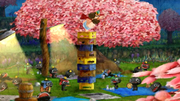
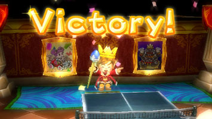

みなさん、こんにちは。
はじめての登場になります、マネージメントの宮川です。
私は、このプロジェクトでは、開発現場でのビジネス面やサポート役として、
係わってきました。
いよいよ９月３日に「王様物語」が発売になります。
私自身、この発売を大変楽しみに待っている今日この頃です。
開発の当初は、まだスタッフも少ない中で、
きむＰのこだわりや、和田ＥＰのひと声など、
「あーでもない」「こーでもない」と、企画や仕様を話し合っていたことが、
遠い昔のように思えて、あの頃が懐かしいような、辛かった～みたいな…
でも、なかなかここに時間をしっかり取れるプロジェクトも少ないので、
とても有意義な期間でした。
（※ヒント： 敏腕社長も酒の席ではガードが甘くなるぞ！）
みなさんも、すでにご存じのとおり、今回の「王様物語」の開発には、
いろんな会社や立場のスタッフが参加していました。
最初は、バラバラの現場をどう取りまとめるか、
進捗の管理や作業指示をどうするか、試行錯誤も多かったです。
スタッフも、いつもと勝手が違って苦労も多かったと思います。
でも、きむＰを中心に徐々に結束して、
いいチームになったのではないでしょうか。
去年の今頃は、夏バテ対策と、もうひと踏ん張りの景気付けに、
毎月食事会なんかをセッティングしていたのを思い出します。
これが厳しい開発の中でも、ひと時の楽しみでしたね。
（※開発での酒盛り風景。真ん中で踊るのが、酔った宮川社長です。） 
そんなスタッフの苦労のかいもあって、出来あがった作品は、
海外でも高評価をいただける、大変素晴らしいものになりました。
また、こんなに海外からも、うれしいコメントを頂けて、
正直びっくりしましたし、みなさんの期待を感じました。
和田ＥＰと「なにか新しいモノを作りましょう」と話したのが約３年半前。
紆余曲折ありながらも、もう少しでみなさんに遊んで頂けるのが、
とても、うれしく思っています。
みなさん、是非「王様物語」をプレイして楽しんでくださいね。
みなさん、はじめまして、こんにちは。
王様物語でスクリプト担当 福岡開発室カギ当番（当時）
株式会社シングの鶴田です。
本日はスクリプトについてつらつらと、お話ししたいと思います。
プレイヤーが操作しない、ムービー以外の「お芝居」のシーンは
全てスクリプトで構築されています（本当はそれ以外もかなりの部分が
スクリプトなんですが）
王様物語のスクリプトは、かなりいろいろなことができました。
（かなりいろいろなことができすぎて、私と昨日ブログを書いた
福浦だけでは作業が追いつかず、最終的には４人で作りました。）
開発もかなり終盤に差し掛かった頃、池田さんとスクリプタ江中君が
なにやら悪巧みをしていました。
それは、このスクリプトをフル利用した、ミニゲームの追加の相談でした。
私はそれができるのを横で見てただけですが、最終的にそのミニゲームは
「すごい」「そこまでしなくても」と思うほどのデキになりました。
単純なだけに、かえって人によってはゲーム本編よりも熱くなる
かもしれません。
このようなことができるのも、このゲームのスクリプトの多様性に
よるものだと思います。
購入された方は、探してみてください。
（※はてさて何のゲームでしょ～か。） 
さて、私たちが作ったイベントシーンの中で、特に見て頂きたい
（というか、気を遣った）イベントといえば、何といってもやはり
このゲームを彩る、個性豊かなお姫様の出演するイベントです。
なんでも「ツンデレ」「眼鏡っ子」など、「あらゆるタイプの女性を集めた」
とのことなんですが、どうでしょうか。個性派が多めのようです。
開発内では、ブーケさんが意外と人気があったと思いますが、
私ならフェルネさんですね。 たぶん少数派です。
（※フェルネ姫。…め、目のやり場に困ります～。）
このようにして、王様物語は、だんだん制作期間が無くなっていく中
あれもこれも詰め込みたいという開発者の愛があふれた作品になっております。
ぜひ手にとって遊んでいただけたら幸いです。
以上、ありがとうございました。
機会がありましたらまたお会いしましょう。
クリエイターズBLOGをご覧のみなさま、
はじめまして、スクリプト担当の福浦と申します。
この作品を通じて私は随分成長しました。
イベント作成に慣れてから、少し前に自分が作ったイベントを見て、
「なんだこのもっさりした感じは･･･」
と衝撃を受けたほど、短い期間で急成長を果たしました。
開発のみなさま、その節は本当にありがとうございました。
◆ ちょっと意識改革 ◆
福岡に木村さんがいらっしゃって、イベントを見てもらった時、
「ここの間が長い」や「今の動きは何がしたいのか分からない」、
「この動き出しを15フレーム早めて」などの細かい演出修正の指示で、
ユーザーが遊んだときに感じる印象が一番大切なんだ。
ということに気付かされました。
それからというもの、単純に演出的に走るのではなく、
「ストレスを感じさせない」、「分かりやすい内容」の
イベントを作るよう心がけました。
（といっても未熟者が作ったイベントですから、
それでも調整・修正指示が大量にあったのはいい思い出です…）
このイベントは、敵国の王様からの挑戦状を、パンチョが
ダッシュで届けてくるといったものです。
 （※パンチョはいつも突っ込んでばかり。かわいいヤツです。）
（※パンチョはいつも突っ込んでばかり。かわいいヤツです。）
特に何度も修正と調整が入ったところで、思い出深いイベントの
ひとつです。 最終的には、サクッと小気味良く見られる
イベントに仕上がったと思います。がんばりました。
開発終盤は最終ＯＫになるまでに、
イベント調整 → 演出チェック → イベント調整 …
という流れを繰り返し繰り返しして、より良いモノを目指しました。
正直、最後の方では疲れも溜まっていましたが、
目に見えて良くなっていくイベントを見ていると、
つらさを忘れてどんどん楽しくなっていきます。
ランナーズハイとか、クライマーズハイ的な感じでしょうか。
手を抜かず、がんばった末に手に入れた、ゲーム作りの楽しさ。
とても良い経験になりました。
発売後、自分が手がけたイベントをユーザーに見てもらって
「何じゃこれは？」と思われないかとドキドキワクワクしつつ、
自分もいちユーザーとして発売をすごく楽しみに待っています。
それではみなさま『王様物語』をよろしくお願いします。
王様物語クリエイターズブログをご覧のみなさま、はじめまして！
デバッグ兼レベルデザイン担当のシエロこと江口です。
いつも欠かさず王様公式サイトとブログをチェックしています。
「えどさん”＆ふみいち」ＤＶＤ欲しかったなぁ…orz
…と、思っていた矢先のブログ指名に、正直おどろいています！
さてさて、開発にはデバッガーとして途中から参加させていただき、
更には池田さんの指示の下、レベルデザインを担当させてもらいました。
主にヘンナノの配置調整、アイテム配置調整、サウンド調整などなど。
ゲームをより一層面白くするためにすごく配置にはこだわりました！
遠征する楽しさを追及し、一度は遠征した道や、
ふと脇道にそれた所で新たな発見があるかもしれませんよ？
 （※お宝を頭に乗せ、物思いにふけるオニー発見！）
（※お宝を頭に乗せ、物思いにふけるオニー発見！）
画像のように、ヘンナノの配置には色々と工夫がしてあります。
もちろん戦闘を楽しめるような配置になってるところが多いのですが、
こちらの様子を偵察していたり、お宝見つけて喜んでる憎めない奴らなど、
戦闘ばかりではなくヘンナノの生態を観察してみると、もっと面白さが
広がると思いますよ！
そして僕がオススメするのは動物たちとのかけっこ、「森の運動会」です。
 （※森の運動会でデットヒーーット！…捕食しないでね。）
（※森の運動会でデットヒーーット！…捕食しないでね。）
動物たちのライン取りをやらせていただいのですが、
好きなところにポイント取って繋げてみたら、思いのほか鬼畜なラインに･･･
おかげさまでドリフトで鋭く攻めてくる猛者まで現れてしまいました･･･ｗ
あと少しでゴール･･･ってところで追い抜かれる危険があるので
最後の最後まで結果が分からないのが醍醐味です！
負けても負けても挑戦したくなる、見た目ほんわかな白熱レースが
楽しめるはずですよー
さぁ、発売まであと１６日となりました！
デバッグ兼テストプレイでたくさん遊びましたが、まだまだ遊び足りないですー！
それぐらいやることが多くてボリュームのあるゲームだと思ってますー！
国民をワラワラ引き連れて遠征に励むもよし。
たまには休んで町の人たちの生活を見るのもよし。
人それぞれのスタンスでプレイできる、素敵なゲームだと思います！
こんなゲームの開発に関われて幸せだなぁ･･･
以上！
最後まで読んでくださってありがとうございました！
これからも王様物語をよろしくお願いします！
最近地震が多いですね。怖いです。
きむＰ傘下ＰＲ大臣臣下の池田トムです。
そうです。
いよいよ発売が２週間ちょいに迫っていたわけです。
まさかのスピードに驚きが隠せません。
さて、「５大ヒミツＰＲキャンペーン」のヒミツ部分も
残すところあと１つ。
王様募集の次は「牛募集」！！
全国の酪農家の皆様お待たせしました～♪
愛情とお肉がギュ～っと詰まった牛ちゃん大募集どぇ～す★
（※落選した牛はスタッフが美味しく頂きます。）
…とかだといいなぁ。
ＰＲ大臣に提案してみようかなぁ。
（…あ、忙しそう。刺されそうだしやめとこう。）
と、そんな感じで今後も目が離せないＰＲですが、
王様ブログもとうとうラストスパート。
今週は福岡の企画チームに書いてもらいましょう。
愛すべき…
シングの社長 宮川さん（マネージメント）
開発の核弾頭 鶴田さん（スクリプター）
静かなる若頭 福浦さん（スクリプター）
名前がエロい 江口さん（レベルデザイン）
ゲームのデータ制作にまつわるおもしろ情報発表の予感。
非常に楽しみです。
それでは。


 クリエイターズBLOG トップ
クリエイターズBLOG トップ